MUSIC LABORATORY / DILIJAN
ИГРАЙ.ИМПРОВИЗИРУЙ.СОЗДАВАЙ.
Tune Tots — детская музыкальная лаборатория, где дети не просто узнают, как устроена музыка, а сразу сочиняют, записывают и играют свою.
WHAT IS TUNE TOTS?
Музыка
для всех!
В Tune Tots ребёнок не ждёт несколько лет, чтобы наконец начать создавать. Мы соединяем музыкальную теорию, технологии, звукорежиссуру и игру — и превращаем знания в практику сразу.
Главная цель лаборатории — помочь детям полюбить музыку. Мы сочиняем, записываем, учимся внимательно слушать себя и других, работаем по одному и собираемся в команду. Из классического образования берём то, что действительно помогает понимать музыку, и тут же проверяем это на практике в Ableton Live.
Новый ритм становится битом, интервалы — мелодией, а разговор о записи звука заканчивается микрофоном в руках. Так ребёнок видит, зачем ему каждое новое знание, и довольно быстро может сказать: «Это сделал я».


COMPOSER / SOUND DESIGNER
THE PERSON BEHIND THE LAB
Никола Чен
Композитор, саунд-дизайнер, мультиинструменталист, преподаватель и основатель Tune Tots Lab.
- Окончил Московскую государственную консерваторию им. П. И. Чайковского по классу кларнета и фортепиано.
- Окончил курсы звукорежиссуры в школе МАСКЕЛИАДЕ и саунд-дизайна в школе MusicLab.
- Преподавал кларнет в музыкальной школе им. А. Б. Гольденвейзера и курс звукорежиссуры для детей в музыкальной школе им. Н. П. Ракова в Москве.
- Сотрудничает как композитор с Audi, Mercedes-Benz, McDonald’s, Skyeng и Playtronica.
- Музыка Николы звучала на Неделе моды в Копенгагене и вошла в саундтрек театральной постановки на Бродвее в Нью-Йорке.
- Куратор экспериментальной сцены фестиваля DiliRock в Дилижане.
- Лауреат I премии Международного конкурса имени Яна Сибелиуса в Финляндии.
- Участник событий Resonance Moscow, M-Division и трёх Московских биеннале современного искусства.
INSIDE THE LAB
Что происходит
внутри лаборатории?
На занятиях мы много делаем руками и ушами: записываем звуки, собираем ритмы, пробуем эффекты, спорим о том, что звучит лучше, и учимся объяснять свой выбор. Теория появляется именно тогда, когда она нужна для следующего шага — поэтому не висит в воздухе и хорошо запоминается.
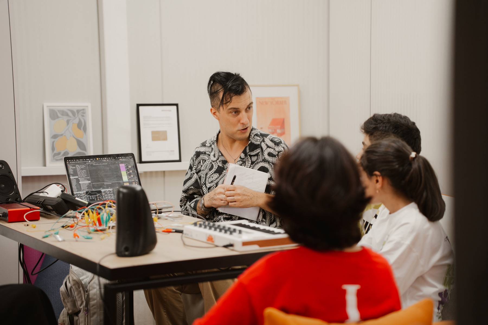
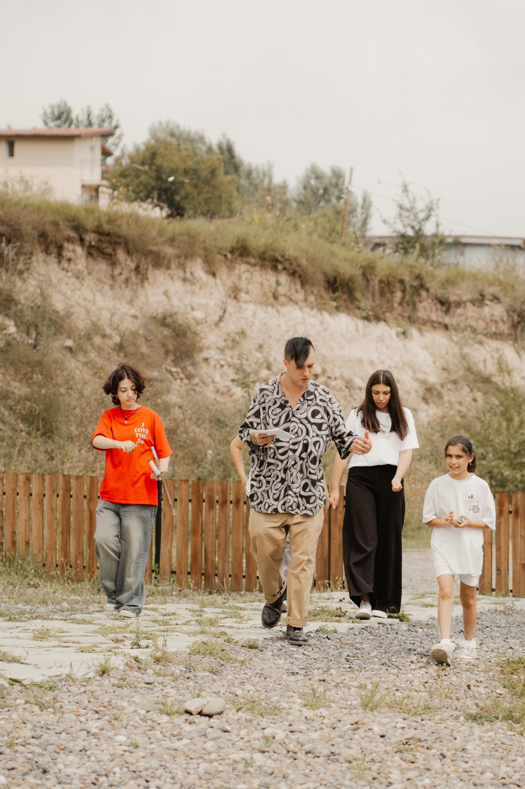
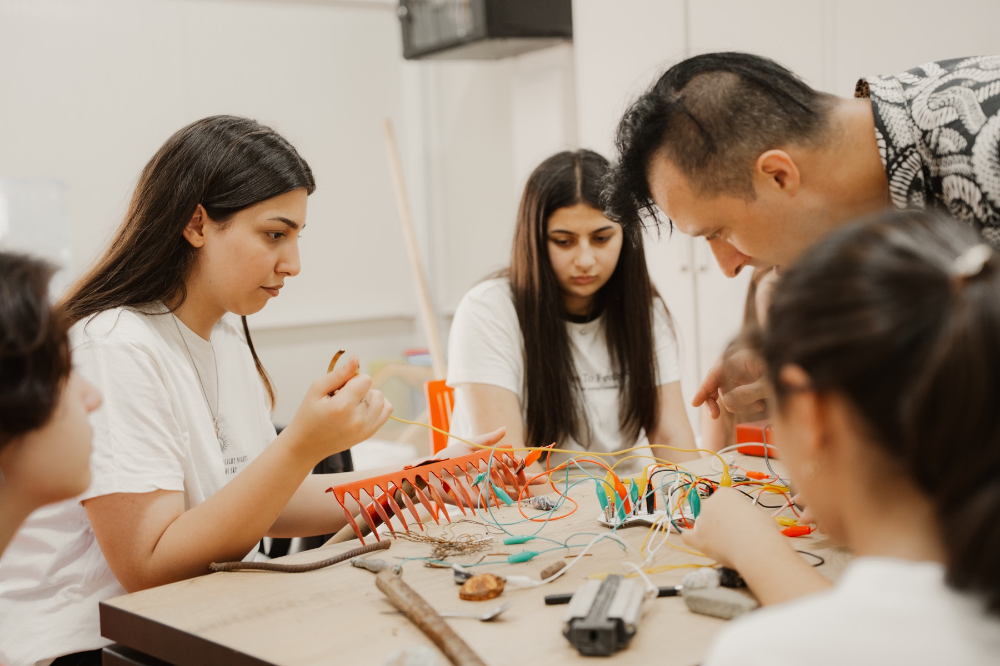
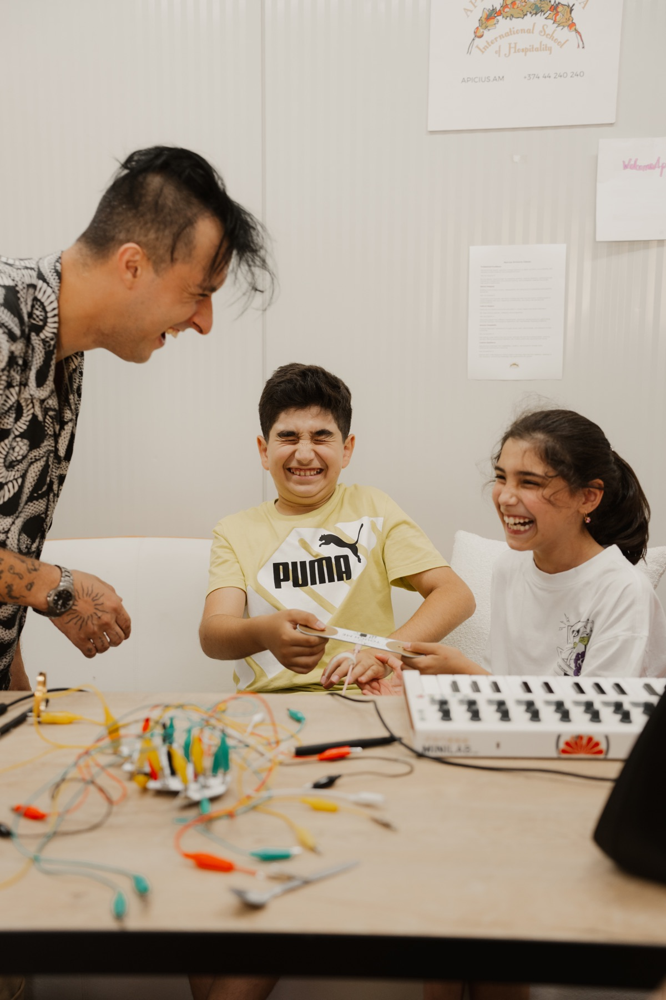
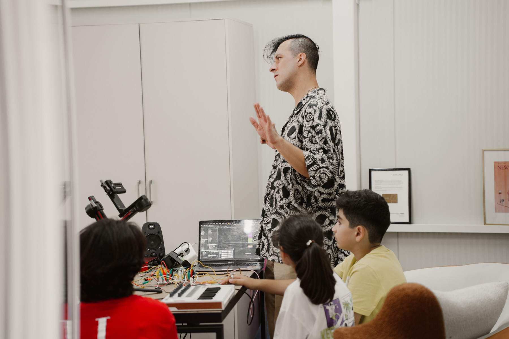
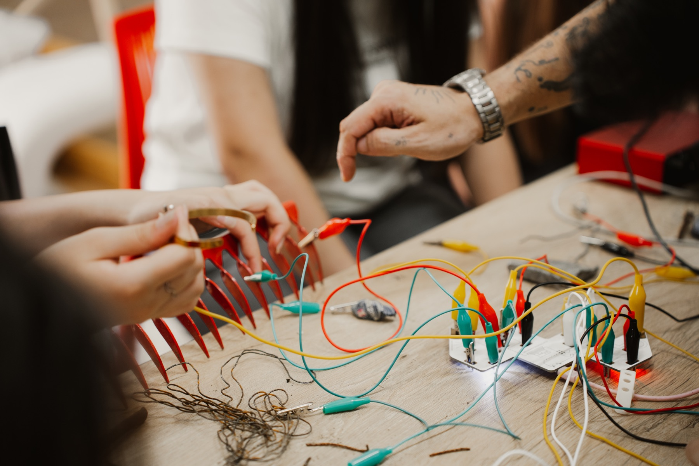
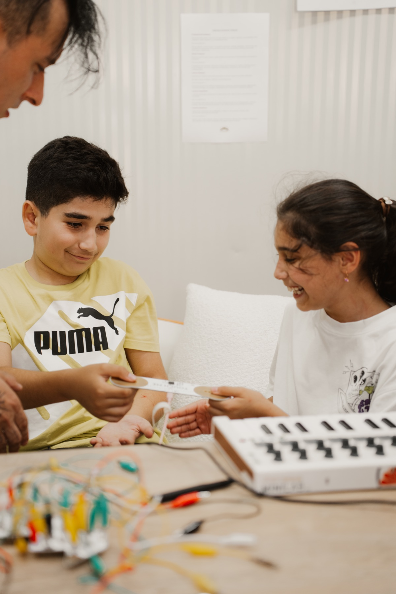
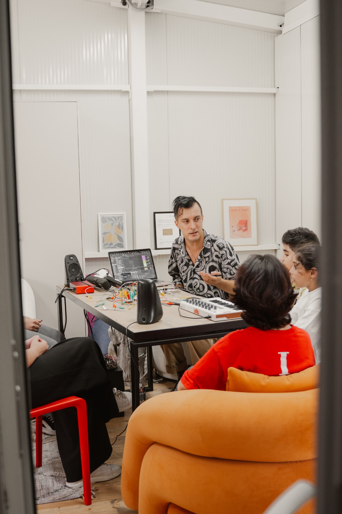
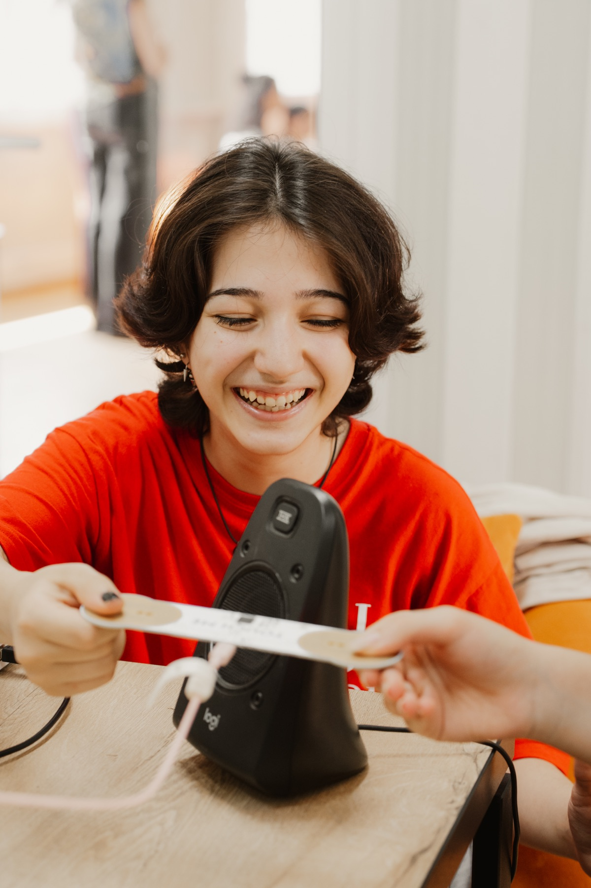
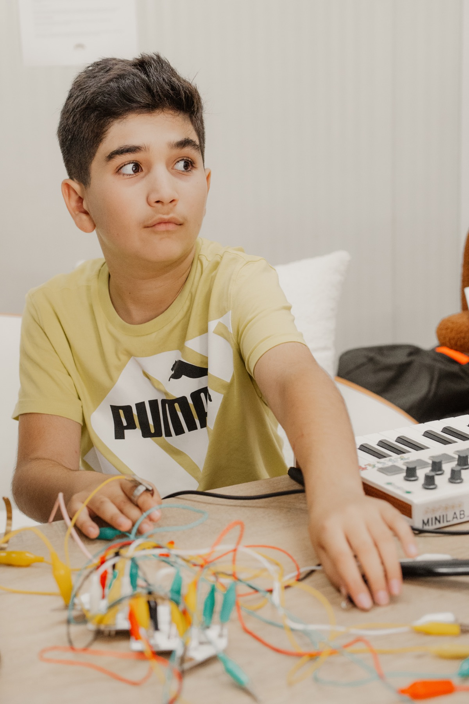
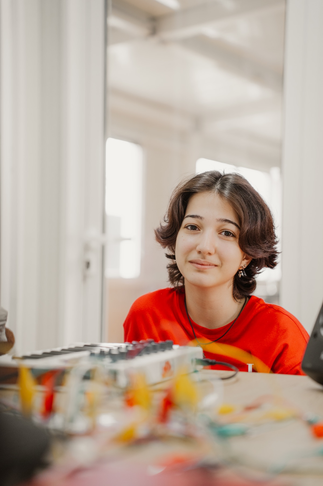
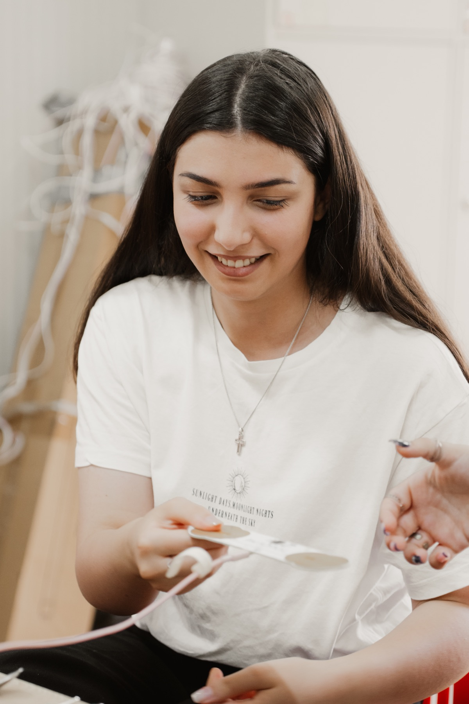
На занятиях дети знакомятся с музыкой с разных сторон: сочиняют, записывают, играют, разбираются в ритме, мелодии и звуке. Всё происходит через игру и живой эксперимент — поэтому ребёнок не устаёт «учиться музыке», а с удовольствием возвращается к ней и хочет придумать ещё.

PLAYTRONICA × TUNE TOTS
Что, если яблоко
может стать
инструментом?
Устройства Playtronica превращают проводящие предметы в музыкальные инструменты. Можно коснуться яблока, растения или обычной ложки — и сразу услышать результат. Не нужно сначала доказывать, что ты «музыкальный»: играть можно через несколько секунд.
Это не просто эффектный трюк. Удивление снимает страх ошибки, затем появляется вопрос «а что будет, если…?» — и вот ребёнок уже меняет тембр, сравнивает варианты и незаметно для себя учится по-настоящему.
MORE THAN MUSIC
Музыка учит
слышать друг друга.
Соло и команда.
Ребёнок учится предлагать свою идею, но также оставлять место для идей других. Хороший общий трек начинается с внимательного слушания.
Теория, у которой есть работа.
Мы не заучиваем определение ритма или интервала ради определения. Новое знание сразу становится битом, мелодией или частью аранжировки.
Ошибка — это материал.
Неожиданный звук не обязан быть «неправильным». Его можно переслушать, изменить и превратить в самое интересное место композиции.
Музыка остаётся с ребёнком.
Не каждый станет профессиональным музыкантом — и это нормально. Нам важно, чтобы творчество осталось способом думать, чувствовать и говорить о себе.

Восемь встреч.
Один настоящий трек.
За курс ребёнок проходит весь путь: записывает первые звуки, собирает ритм и мелодию, работает с эффектами и доводит композицию до финала. В конце остаётся не папка с упражнениями, а собственный трек, который можно включить друзьям и родителям.
А ещё — опыт живого выступления в электронном оркестре Tune Tots и важное ощущение: музыку можно не только слушать. Её можно создавать.

THE COURSE
От первого звука
до собственного трека.
За восемь встреч ребёнок научится записывать звук, работать с ритмом и мелодией, пользоваться Ableton Live, эффектами и основными инструментами звукорежиссуры. Всё это не отдельными упражнениями, а внутри собственного музыкального проекта.
Финал курса — готовый трек и коллективное выступление в электронном оркестре Tune Tots с устройствами Playtronica. Нужны ноутбук, наушники и желание пробовать; с остальным разберёмся вместе.
READY TO PLAY?
© 2026Давай
создавать.
Напишите нам, чтобы узнать ближайшую дату набора и записать ребёнка.
STAY TUNED
Telegram
и Instagram
Новости лаборатории, анонсы наборов и музыка из наших экспериментов.